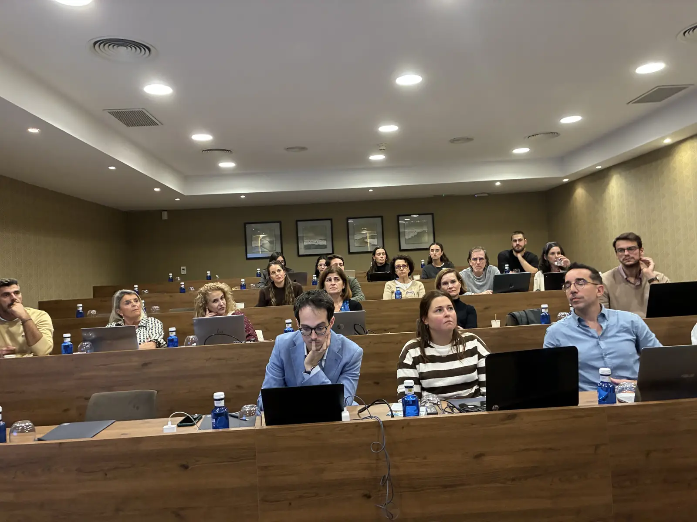
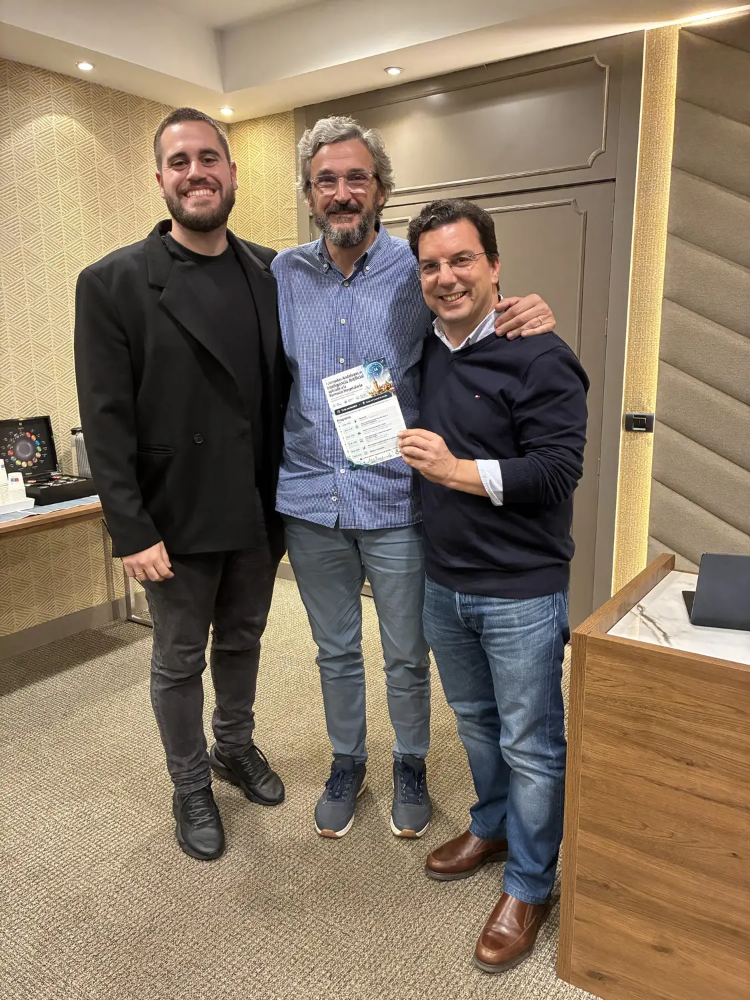

Programa
I Jornadas Andaluzas de Inteligencia Artificial aplicada a la Farmacia Hospitalaria
- BienvenidaRamón Morillo · Hospital de Valme
- Sesión estratégica integrada: visión de la IA en Farmacia HospitalariaEmilio Monte · Hospital La Fe (Valencia)
- Mesa breve de experiencias de éxitoJaime Cordero · Hospital Virgen Macarena (Sevilla) · Jorge Díaz · Hospital de Puerto Real (Cádiz)
- Taller práctico único: creación de soluciones con Claude/CodexEmilio Monte · Hospital La Fe (Valencia) · Juan Mora · Hospital de Jerez (Cádiz)
- Posicionamiento MAPEX-SEFH IA en consulta externaRamón Morillo · Hospital de Valme
- Debate y conclusiones
Lugar: Hotel AC Ciudad de Sevilla · jueves 12 de noviembre de 2026. Organiza: Almirall.
Para el recuerdo
Así fue la jornada del 12 de noviembre

